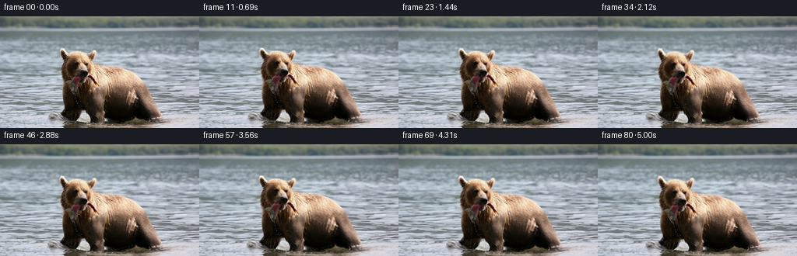
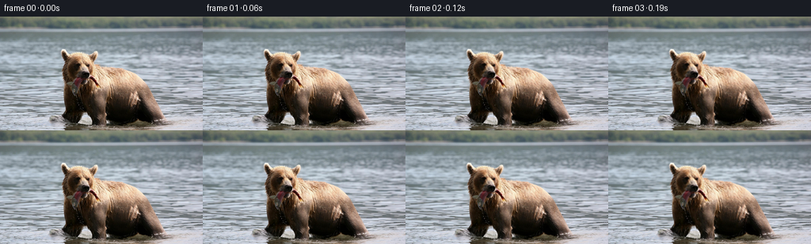
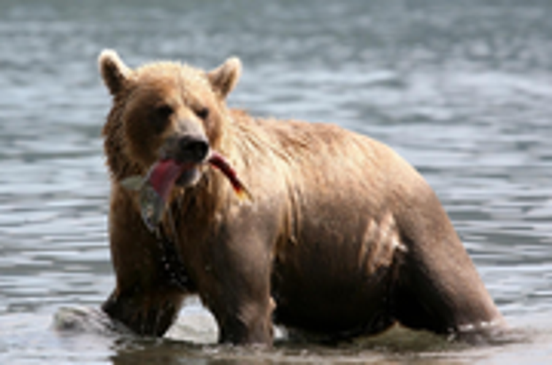
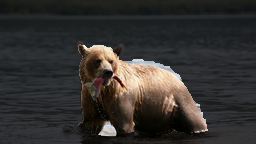
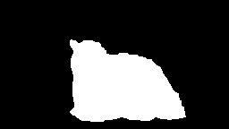

CODING AGENTS AS PIXEL WORLD MODELS
traex/GPT-5.6-Sol · 0872_s3
点击播放 · 原生 RGB 像素
此结果可播放，但该运行尚未通过最终提交审核。页面展示不代表评测通过。
逐轮保存的候选
回放视频、检查图与代码变化。
每份候选均可单独播放。实际图片检查记录在下方工具轨迹中。
候选 01播放与检查图
点击播放 · 原生 RGB 像素


展开代码变化
--- 上一保存版本
+++ 本次保存版本
@@ -0,0 +1,200 @@
+"""Generate a restrained photographic animation from first_frame.png.
+
+The animation keeps the supplied bear and fish intact while introducing a slow
+camera push, organic body/head motion, moving surface refraction, wakes around
+the legs, and occasional falling water drops. It uses only deterministic
+OpenCV/Numpy image geometry and the required local input image.
+"""
+from pathlib import Path
+import cv2
+import numpy as np
+from PIL import Image
+import artifact_io
+
+CASE_DIR = Path(__file__).resolve().parent
+W, H, N, FPS = 256, 144, 81, 16
+
+
+def smoothstep(x):
+ x = np.clip(x, 0.0, 1.0)
+ return x * x * (3.0 - 2.0 * x)
+
+
+def subject_matte(rgb):
+ """A deterministic soft matte initialized from the known central silhouette."""
+ bgr = cv2.cvtColor(rgb, cv2.COLOR_RGB2BGR)
+ mask = np.zeros((H, W), np.uint8)
+ outer = np.array([
+ [76,42],[84,40],[96,44],[107,42],[121,54],[146,58],
+ [169,64],[186,76],[196,96],[207,118],[215,132],[205,138],
+ [177,138],[155,134],[130,133],[114,136],[99,137],[85,134],
+ [76,124],[78,108],[77,88],[75,72],[79,57]
+ ], np.int32)
+ cv2.fillPoly(mask, [outer], cv2.GC_PR_FGD)
+ inner = [
+ [[84,52],[98,45],[111,49],[120,67],[111,85],[88,84],[80,67]],
+ [[110,64],[150,61],[178,74],[191,102],[184,126],[149,128],[120,116]],
+ [[86,77],[105,76],[108,128],[84,128]],
+ [[115,91],[136,96],[131,133],[111,132]],
+ [[174,89],[198,103],[208,130],[184,132]],
+ ]
+ for points in inner:
+ cv2.fillPoly(mask, [np.array(points, np.int32)], cv2.GC_FGD)
+ # The salmon projects from both sides of the muzzle.
+ cv2.line(mask, (96,76), (70,94), cv2.GC_PR_FGD, 7)
+ cv2.line(mask, (102,75), (125,93), cv2.GC_PR_FGD, 7)
+ bgd = np.zeros((1, 65), np.float64)
+ fgd = np.zeros((1, 65), np.float64)
+ cv2.grabCut(bgr, mask, None, bgd, fgd, 7, cv2.GC_INIT_WITH_MASK)
+ hard = np.where((mask == cv2.GC_FGD) | (mask == cv2.GC_PR_FGD), 1.0, 0.0).astype(np.float32)
+ hard = cv2.morphologyEx(hard, cv2.MORPH_CLOSE, np.ones((3,3), np.uint8))
+ soft = cv2.GaussianBlur(hard, (0,0), 2.2)
+ return np.clip(soft, 0, 1), hard
+
+
+def ellipse_mask(xx, yy, cx, cy, rx, ry, blur=1.0):
+ q = ((xx-cx)/rx)**2 + ((yy-cy)/ry)**2
+ # Smooth, compact falloff rather than a visible oval boundary.
+ a = np.clip(1.0 - q, 0.0, 1.0)
+ a = a*a*(3.0-2.0*a)
+ if blur:
+ a = cv2.GaussianBlur(a.astype(np.float32), (0,0), blur)
+ return a
+
+
+def add_ripple(frame, center, age, strength, occlusion):
+ """Add an expanding, soft elliptical wake. age is in seconds."""
+ if age < 0 or age > 1.55:
+ return frame
+ fade = np.sin(np.pi * age / 1.55) ** 0.7
+ rx = 6.0 + 22.0 * age / 1.55
+ ry = 1.3 + 3.7 * age / 1.55
+ layer = np.zeros((H, W), np.float32)
+ c = (int(round(center[0])), int(round(center[1])))
+ cv2.ellipse(layer, c, (int(rx), max(1,int(ry))), 0, 0, 360, 1.0, 1, cv2.LINE_AA)
+ cv2.ellipse(layer, c, (max(2,int(rx-2.3)), max(1,int(ry-0.8))), 0, 0, 360, -0.55, 1, cv2.LINE_AA)
+ layer = cv2.GaussianBlur(layer, (0,0), 0.45) * fade * strength
+ layer *= (1.0 - 0.90 * occlusion)
+ # Pale upper glint, with a tiny darker trough for dimensionality.
+ out = frame.astype(np.float32)
+ tint = np.array([194, 204, 202], np.float32)
+ pos = np.clip(layer, 0, 1)[...,None]
+ out = out * (1-pos) + tint * pos
+ neg = np.clip(-layer, 0, 1)[...,None]
+ out *= (1.0 - 0.13*neg)
+ return np.clip(out,0,255).astype(np.uint8)
+
+
+def generate():
+ base = np.asarray(Image.open(CASE_DIR / 'first_frame.png').convert('RGB'), dtype=np.uint8)
+ assert base.shape == (H, W, 3)
+ matte, hard_matte = subject_matte(base)
+ yy, xx = np.mgrid[0:H, 0:W].astype(np.float32)
+
+ head = ellipse_mask(xx, yy, 99, 66, 30, 28, .7) * matte
+ muzzle_fish = ellipse_mask(xx, yy, 97, 82, 34, 16, .5) * matte
+ body = matte
+ water = smoothstep((yy - 53.0) / 23.0) * (1.0 - 0.94*matte)
+ water *= 1.0 - 0.55*smoothstep((57.0-yy)/15.0)
+
+ # Deterministic elongated low-amplitude caustic texture.
+ rng = np.random.default_rng(872)
+ noise = rng.normal(0, 1, (H, W*2)).astype(np.float32)
+ noise = cv2.GaussianBlur(noise, (0,0), sigmaX=8.0, sigmaY=.65)
+ noise /= max(noise.std(), 1e-5)
+
+ frames = []
+ for i in range(N):
+ if i == 0:
+ frames.append(base.copy())
+ continue
+ sec = i / FPS
+ p = smoothstep(i/(N-1))
+
+ # Gentle camera push-in, centered on the bear's face/chest.
+ zoom = 1.0 + 0.0105*p
+ mapx = 112.0 + (xx-112.0)/zoom
+ mapy = 82.0 + (yy-82.0)/zoom
+
+ # The bear shifts its weight while wading; vertical and horizontal
+ # components use different periods to avoid mechanical looping.
+ dx_body = 0.72*np.sin(2*np.pi*sec/3.8) + 0.45*p
+ dy_body = -0.78*np.sin(2*np.pi*sec/2.85)
+ mapx -= body * dx_body
+ mapy -= body * dy_body
+
+ # A tiny independent head turn/nod keeps the eyes and carried fish alive.
+ dx_head = 0.72*np.sin(2*np.pi*sec/3.15)
+ dy_head = 0.38*(np.cos(2*np.pi*sec/2.45)-1.0)
+ angle = 0.010*np.sin(2*np.pi*sec/3.4)
+ mapx -= head*dx_head
+ mapy -= head*dy_head
+ mapx += head * angle*(yy-68.0)
+ mapy -= head * angle*(xx-99.0)
+
+ # The ends of the salmon sway fractionally as the muzzle moves.
+ fish_phase = np.sin(2*np.pi*sec/1.72)
+ fish_angle = 0.013*fish_phase
+ mapx += muzzle_fish * fish_angle*(yy-76.0)
+ mapy -= muzzle_fish * fish_angle*(xx-100.0)
+
+ # Surface refraction: layered traveling waves, almost entirely excluded
+ # from the animal itself. Subtracting the phase at t=0 ensures a clean
+ # transition from the exact supplied first frame.
+ phase1 = .075*xx + .155*yy
+ phase2 = .045*xx - .235*yy
+ wx = .43*((np.sin(phase1-1.35*sec)-np.sin(phase1)))
+ wx += .24*((np.sin(phase2+.85*sec)-np.sin(phase2)))
+ wy = .16*((np.sin(.105*xx+.19*yy-1.05*sec)-np.sin(.105*xx+.19*yy)))
+ mapx += water*wx
+ mapy += water*wy
+
+ warped = cv2.remap(base, mapx.astype(np.float32), mapy.astype(np.float32),
+ cv2.INTER_CUBIC, borderMode=cv2.BORDER_REFLECT_101)
+
+ # Slow coherent shimmer from horizontally elongated surface detail.
+ shift = sec*7.0
+ nmapx = (xx + shift).astype(np.float32)
+ nmapy = yy.astype(np.float32)
+ moving_noise = cv2.remap(noise[:,:W], nmapx, nmapy, cv2.INTER_LINEAR,
+ borderMode=cv2.BORDER_WRAP)
+ # Correct use of a 2W source, sampled continuously.
+ moving_noise = cv2.remap(noise, (xx+shift).astype(np.float32), nmapy,
+ cv2.INTER_LINEAR, borderMode=cv2.BORDER_WRAP)
+ initial_noise = noise[:,:W]
+ shimmer = (moving_noise-initial_noise) * 1.45 * water
+ out = np.clip(warped.astype(np.float32) + shimmer[...,None], 0, 255).astype(np.uint8)
+
+ # Wakes repeatedly propagate from forepaw and rear flank.
+ occ = cv2.remap(hard_matte, mapx.astype(np.float32), mapy.astype(np.float32),
+ cv2.INTER_LINEAR, borderMode=cv2.BORDER_CONSTANT)
+ births = [0.12, 1.55, 3.02, 4.35]
+ for birth in births:
+ out = add_ripple(out, (101+0.25*sec, 132), sec-birth, .18, occ)
+ for birth in [0.72, 2.35, 3.82]:
+ out = add_ripple(out, (190+0.15*sec, 130), sec-birth, .13, occ)
+
+ # Water beads falling from the fish/muzzle, subtle at this resolution.
+ drop_layer = out.astype(np.float32)
+ for birth in [0.42, 1.63, 2.78, 3.95]:
+ age = sec-birth
+ if 0 <= age <= .62:
+ x = 102 + 1.5*np.sin(age*10 + birth)
+ y = 88 + 18*age + 24*age*age
+ iy, ix = int(round(y)), int(round(x))
+ if 1 <= ix < W-1 and 1 <= iy < H-1:
+ a = max(0.0, 1.0-age/.62)*.48
+ drop_layer[iy,ix] = drop_layer[iy,ix]*(1-a) + np.array([215,224,219])*a
+ if iy+1 < H: drop_layer[iy+1,ix] *= (1-.18*a)
+ out = np.clip(drop_layer,0,255).astype(np.uint8)
+ frames.append(out)
+
+ frames = np.stack(frames).astype(np.uint8)
+ # Contract-critical identity assertion.
+ assert np.array_equal(frames[0], base)
+ artifact_io.save(frames, CASE_DIR)
+ return frames
+
+
+if __name__ == '__main__':
+ generate()
候选 02播放与检查图
点击播放 · 原生 RGB 像素

展开代码变化
代码未变化；重新保存了产物。
可观测工具轨迹
实际执行的命令与返回图片。
命令 1exit 0
/bin/bash -lc "cat GENERATION_RULES.md && printf '\\n--- PROMPT ---\\n' && cat prompt.txt"
命令 2exit 1
/bin/bash -lc "find . -maxdepth 2 -type f -printf '%p\\n' | sort && printf '\\n--- tools ---\\n' && command -v ffmpeg && command -v python3 && python3 - <<'PY'
from PIL import Image
im=Image.open('first_frame.png')
print(im.size, im.mode)
PY"命令 3exit 0
/bin/bash -lc "cat task_spec.json && sed -n '1,240p' artifact_io.py"
命令 4exit 0
/bin/bash -lc "python3 - <<'PY'
from PIL import Image
import numpy as np
im=Image.open('first_frame.png')
print(im.size, im.mode, np.asarray(im).shape)
try:
import cv2; print('cv2',cv2.__version__)
except Exception as e: print('no cv2',e)
try:
import scipy; print('scipy',scipy.__version__)
except Exception as e: print('no scipy',e)
PY"命令 5exit 0
/bin/bash -lc "python3 - <<'PY'
from PIL import Image
im=Image.open('first_frame.png')
im.crop((45,25,225,144)).resize((900,595)).save('bear_crop.png')
PY"命令 6exit 2
/bin/bash -lc "cat > /tmp/testseg.py <<'PY'
import cv2, numpy as np
from PIL import Image
im=cv2.imread('first_frame.png')
mask=np.zeros(im.shape[:2],np.uint8)
# polygon probable foreground, designed tightly around silhouette including fish
poly=np.array([[76,42],[84,41],[95,45],[107,43],[121,55],[145,59],[169,65],[186,77],[195,96],[207,119],[214,131],[202,137],[175,137],[154,133],[128,132],[113,135],[99,136],[85,133],[77,124],[79,107],[78,88],[75,72],[79,58]],np.int32)
cv2.fillPoly(mask,[poly],cv2.GC_PR_FGD)
# sure fg sampled inner structures
polys=[np.array([[84,52],[98,45],[112,50],[120,69],[110,86],[87,84],[80,67]],np.int32),
np.array([[111,65],[151,61],[179,75],[191,104],[184,126],[148,127],[120,116]],np.int32),
np.array([[87,77],[106,77],[107,128],[84,127]],np.int32),
np.array([[115,92],[135,96],[130,132],[111,132]],np.int32),
np.array([[174,90],[198,104],[207,130],[185,131]],np.int32)]
for p in polys: cv2.fillPoly(mask,[p],cv2.GC_FGD)
# fish/tongue
cv2.line(mask,(86,78),(72,94),cv2.GC_PR_FGD,5)
cv2.line(mask,(106,76),(123,92),cv2.GC_PR_FGD,5)
bgd=np.zeros((1,65),np.float64); fgd=bgd.copy()
cv2.grabCut(im,mask,None,bgd,fgd,7,cv2.GC_INIT_WITH_MASK)
a=np.where((mask==1)|(mask==3),255,0).astype('uint8')
a=cv2.morphologyEx(a,cv2.MORPH_CLOSE,np.ones((3,3),np.uint8))
# feather
soft=cv2.GaussianBlur(a,(0,0),0.7)
out=im.copy(); out[a==0]=(out[a==0]*.25).astype(np.uint8)
cv2.imwrite('seg_preview.png',out)
cv2.imwrite('seg_alpha.png',a)
PY
python3 /tmp/testseg.py"命令 7exit 0
/bin/bash -lc "cat > .tmp/testseg.py <<'PY'
import cv2, numpy as np
im=cv2.imread('first_frame.png')
mask=np.zeros(im.shape[:2],np.uint8)
poly=np.array([[76,42],[84,41],[95,45],[107,43],[121,55],[145,59],[169,65],[186,77],[195,96],[207,119],[214,131],[202,137],[175,137],[154,133],[128,132],[113,135],[99,136],[85,133],[77,124],[79,107],[78,88],[75,72],[79,58]],np.int32)
cv2.fillPoly(mask,[poly],cv2.GC_PR_FGD)
polys=[np.array([[84,52],[98,45],[112,50],[120,69],[110,86],[87,84],[80,67]],np.int32),np.array([[111,65],[151,61],[179,75],[191,104],[184,126],[148,127],[120,116]],np.int32),np.array([[87,77],[106,77],[107,128],[84,127]],np.int32),np.array([[115,92],[135,96],[130,132],[111,132]],np.int32),np.array([[174,90],[198,104],[207,130],[185,131]],np.int32)]
for p in polys: cv2.fillPoly(mask,[p],cv2.GC_FGD)
cv2.line(mask,(86,78),(72,94),cv2.GC_PR_FGD,5)
cv2.line(mask,(106,76),(123,92),cv2.GC_PR_FGD,5)
bgd=np.zeros((1,65),np.float64); fgd=bgd.copy()
cv2.grabCut(im,mask,None,bgd,fgd,7,cv2.GC_INIT_WITH_MASK)
a=np.where((mask==1)|(mask==3),255,0).astype('uint8')
a=cv2.morphologyEx(a,cv2.MORPH_CLOSE,np.ones((3,3),np.uint8))
out=im.copy(); out[a==0]=(out[a==0]*.25).astype(np.uint8)
cv2.imwrite('seg_preview.png',out); cv2.imwrite('seg_alpha.png',a)
PY
python3 .tmp/testseg.py"命令 8exit 0
/bin/bash -lc "cat > generate.py <<'PY'
\"\"\"Generate a restrained photographic animation from first_frame.png.
The animation keeps the supplied bear and fish intact while introducing a slow
camera push, organic body/head motion, moving surface refraction, wakes around
the legs, and occasional falling water drops. It uses only deterministic
OpenCV/Numpy image geometry and the required local input image.
\"\"\"
from pathlib import Path
import cv2
import numpy as np
from PIL import Image
import artifact_io
CASE_DIR = Path(__file__).resolve().parent
W, H, N, FPS = 256, 144, 81, 16
def smoothstep(x):
x = np.clip(x, 0.0, 1.0)
return x * x * (3.0 - 2.0 * x)
def subject_matte(rgb):
\"\"\"A deterministic soft matte initialized from the known central silhouette.\"\"\"
bgr = cv2.cvtColor(rgb, cv2.COLOR_RGB2BGR)
mask = np.zeros((H, W), np.uint8)
outer = np.array([
[76,42],[84,40],[96,44],[107,42],[121,54],[146,58],
[169,64],[186,76],[196,96],[207,118],[215,132],[205,138],
[177,138],[155,134],[130,133],[114,136],[99,137],[85,134],
[76,124],[78,108],[77,88],[75,72],[79,57]
], np.int32)
cv2.fillPoly(mask, [outer], cv2.GC_PR_FGD)
inner = [
[[84,52],[98,45],[111,49],[120,67],[111,85],[88,84],[80,67]],
[[110,64],[150,61],[178,74],[191,102],[184,126],[149,128],[120,116]],
[[86,77],[105,76],[108,128],[84,128]],
[[115,91],[136,96],[131,133],[111,132]],
[[174,89],[198,103],[208,130],[184,132]],
]
for points in inner:
cv2.fillPoly(mask, [np.array(points, np.int32)], cv2.GC_FGD)
# The salmon projects from both sides of the muzzle.
cv2.line(mask, (96,76), (70,94), cv2.GC_PR_FGD, 7)
cv2.line(mask, (102,75), (125,93), cv2.GC_PR_FGD, 7)
bgd = np.zeros((1, 65), np.float64)
fgd = np.zeros((1, 65), np.float64)
cv2.grabCut(bgr, mask, None, bgd, fgd, 7, cv2.GC_INIT_WITH_MASK)
hard = np.where((mask == cv2.GC_FGD) | (mask == cv2.GC_PR_FGD), 1.0, 0.0).astype(np.float32)
hard = cv2.morphologyEx(hard, cv2.MORPH_CLOSE, np.ones((3,3), np.uint8))
soft = cv2.GaussianBlur(hard, (0,0), 2.2)
return np.clip(soft, 0, 1), hard
def ellipse_mask(xx, yy, cx, cy, rx, ry, blur=1.0):
q = ((xx-cx)/rx)**2 + ((yy-cy)/ry)**2
# Smooth, compact falloff rather than a visible oval boundary.
a = np.clip(1.0 - q, 0.0, 1.0)
a = a*a*(3.0-2.0*a)
if blur:
a = cv2.GaussianBlur(a.astype(np.float32), (0,0), blur)
return a
def add_ripple(frame, center, age, strength, occlusion):
\"\"\"Add an expanding, soft elliptical wake. age is in seconds.\"\"\"
if age < 0 or age > 1.55:
return frame
fade = np.sin(np.pi * age / 1.55) ** 0.7
rx = 6.0 + 22.0 * age / 1.55
ry = 1.3 + 3.7 * age / 1.55
layer = np.zeros((H, W), np.float32)
c = (int(round(center[0])), int(round(center[1])))
cv2.ellipse(layer, c, (int(rx), max(1,int(ry))), 0, 0, 360, 1.0, 1, cv2.LINE_AA)
cv2.ellipse(layer, c, (max(2,int(rx-2.3)), max(1,int(ry-0.8))), 0, 0, 360, -0.55, 1, cv2.LINE_AA)
layer = cv2.GaussianBlur(layer, (0,0), 0.45) * fade * strength
layer *= (1.0 - 0.90 * occlusion)
# Pale upper glint, with a tiny darker trough for dimensionality.
out = frame.astype(np.float32)
tint = np.array([194, 204, 202], np.float32)
pos = np.clip(layer, 0, 1)[...,None]
out = out * (1-pos) + tint * pos
neg = np.clip(-layer, 0, 1)[...,None]
out *= (1.0 - 0.13*neg)
return np.clip(out,0,255).astype(np.uint8)
def generate():
base = np.asarray(Image.open(CASE_DIR / 'first_frame.png').convert('RGB'), dtype=np.uint8)
assert base.shape == (H, W, 3)
matte, hard_matte = subject_matte(base)
yy, xx = np.mgrid[0:H, 0:W].astype(np.float32)
head = ellipse_mask(xx, yy, 99, 66, 30, 28, .7) * matte
muzzle_fish = ellipse_mask(xx, yy, 97, 82, 34, 16, .5) * matte
body = matte
water = smoothstep((yy - 53.0) / 23.0) * (1.0 - 0.94*matte)
water *= 1.0 - 0.55*smoothstep((57.0-yy)/15.0)
# Deterministic elongated low-amplitude caustic texture.
rng = np.random.default_rng(872)
noise = rng.normal(0, 1, (H, W*2)).astype(np.float32)
noise = cv2.GaussianBlur(noise, (0,0), sigmaX=8.0, sigmaY=.65)
noise /= max(noise.std(), 1e-5)
frames = []
for i in range(N):
if i == 0:
frames.append(base.copy())
continue
sec = i / FPS
p = smoothstep(i/(N-1))
# Gentle camera push-in, centered on the bear's face/chest.
zoom = 1.0 + 0.0105*p
mapx = 112.0 + (xx-112.0)/zoom
mapy = 82.0 + (yy-82.0)/zoom
# The bear shifts its weight while wading; vertical and horizontal
# components use different periods to avoid mechanical looping.
dx_body = 0.72*np.sin(2*np.pi*sec/3.8) + 0.45*p
dy_body = -0.78*np.sin(2*np.pi*sec/2.85)
mapx -= body * dx_body
mapy -= body * dy_body
# A tiny independent head turn/nod keeps the eyes and carried fish alive.
dx_head = 0.72*np.sin(2*np.pi*sec/3.15)
dy_head = 0.38*(np.cos(2*np.pi*sec/2.45)-1.0)
angle = 0.010*np.sin(2*np.pi*sec/3.4)
mapx -= head*dx_head
mapy -= head*dy_head
mapx += head * angle*(yy-68.0)
mapy -= head * angle*(xx-99.0)
# The ends of the salmon sway fractionally as the muzzle moves.
fish_phase = np.sin(2*np.pi*sec/1.72)
fish_angle = 0.013*fish_phase
mapx += muzzle_fish * fish_angle*(yy-76.0)
mapy -= muzzle_fish * fish_angle*(xx-100.0)
# Surface refraction: layered traveling waves, almost entirely excluded
# from the animal itself. Subtracting the phase at t=0 ensures a clean
# transition from the exact supplied first frame.
phase1 = .075*xx + .155*yy
phase2 = .045*xx - .235*yy
wx = .43*((np.sin(phase1-1.35*sec)-np.sin(phase1)))
wx += .24*((np.sin(phase2+.85*sec)-np.sin(phase2)))
wy = .16*((np.sin(.105*xx+.19*yy-1.05*sec)-np.sin(.105*xx+.19*yy)))
mapx += water*wx
mapy += water*wy
warped = cv2.remap(base, mapx.astype(np.float32), mapy.astype(np.float32),
cv2.INTER_CUBIC, borderMode=cv2.BORDER_REFLECT_101)
# Slow coherent shimmer from horizontally elongated surface detail.
shift = sec*7.0
nmapx = (xx + shift).astype(np.float32)
nmapy = yy.astype(np.float32)
moving_noise = cv2.remap(noise[:,:W], nmapx, nmapy, cv2.INTER_LINEAR,
borderMode=cv2.BORDER_WRAP)
# Correct use of a 2W source, sampled continuously.
moving_noise = cv2.remap(noise, (xx+shift).astype(np.float32), nmapy,
cv2.INTER_LINEAR, borderMode=cv2.BORDER_WRAP)
initial_noise = noise[:,:W]
shimmer = (moving_noise-initial_noise) * 1.45 * water
out = np.clip(warped.astype(np.float32) + shimmer[...,None], 0, 255).astype(np.uint8)
# Wakes repeatedly propagate from forepaw and rear flank.
occ = cv2.remap(hard_matte, mapx.astype(np.float32), mapy.astype(np.float32),
cv2.INTER_LINEAR, borderMode=cv2.BORDER_CONSTANT)
births = [0.12, 1.55, 3.02, 4.35]
for birth in births:
out = add_ripple(out, (101+0.25*sec, 132), sec-birth, .18, occ)
for birth in [0.72, 2.35, 3.82]:
out = add_ripple(out, (190+0.15*sec, 130), sec-birth, .13, occ)
# Water beads falling from the fish/muzzle, subtle at this resolution.
drop_layer = out.astype(np.float32)
for birth in [0.42, 1.63, 2.78, 3.95]:
age = sec-birth
if 0 <= age <= .62:
x = 102 + 1.5*np.sin(age*10 + birth)
y = 88 + 18*age + 24*age*age
iy, ix = int(round(y)), int(round(x))
if 1 <= ix < W-1 and 1 <= iy < H-1:
a = max(0.0, 1.0-age/.62)*.48
drop_layer[iy,ix] = drop_layer[iy,ix]*(1-a) + np.array([215,224,219])*a
if iy+1 < H: drop_layer[iy+1,ix] *= (1-.18*a)
out = np.clip(drop_layer,0,255).astype(np.uint8)
frames.append(out)
frames = np.stack(frames).astype(np.uint8)
# Contract-critical identity assertion.
assert np.array_equal(frames[0], base)
artifact_io.save(frames, CASE_DIR)
return frames
if __name__ == '__main__':
generate()
PY
python3 generate.py"命令 9exit 0
/bin/bash -lc "python3 - <<'PY'
from pathlib import Path
import hashlib, subprocess, sys
import numpy as np
from PIL import Image
root=Path('.')
orig=np.asarray(Image.open('first_frame.png').convert('RGB'))
fr=np.stack([np.asarray(Image.open(f'frames/{i:02d}.png').convert('RGB')) for i in range(81)])
print('frames',fr.shape,fr.dtype)
print('first_exact',np.array_equal(fr[0],orig),'first_maxdiff',np.abs(fr[0].astype(int)-orig.astype(int)).max())
for j in [1,10,20,40,60,80]:
d=np.abs(fr[j].astype(np.int16)-fr[0].astype(np.int16))
print(f'frame {j:02d}: mean_abs={d.mean():.3f} changed_px={np.any(d,axis=2).mean():.3%} max={d.max()}')
print('adjacent mean abs avg/max',np.mean(np.abs(np.diff(fr.astype(np.int16),axis=0))),max(np.abs(fr[i].astype(np.int16)-fr[i-1].astype(np.int16)).mean() for i in range(1,81)))
p=np.load('pixels.npz')['pixels']
print('packed tensor',p.shape,p.dtype,'files_ok',all((root/f).exists() for f in ['pixels.npz','index.html','inspection.png']))
h1=hashlib.sha256((root/'pixels.npz').read_bytes()).hexdigest()
subprocess.run([sys.executable,'generate.py'],check=True)
h2=hashlib.sha256((root/'pixels.npz').read_bytes()).hexdigest()
print('deterministic_npz',h1==h2,h2[:16])
PY"视觉工具实际返回图片 1

视觉工具实际返回图片 2

视觉工具实际返回图片 3

视觉工具实际返回图片 4

视觉工具实际返回图片 5

视觉工具实际返回图片 6

保存候选 2 份；完成命令 9 次；可验证图片返回 6 张。原始 API 响应与完整日志保留在本地。